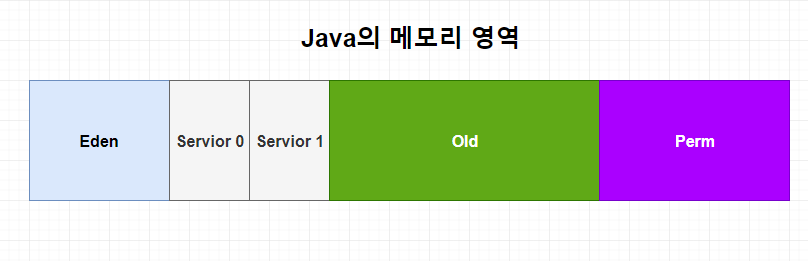
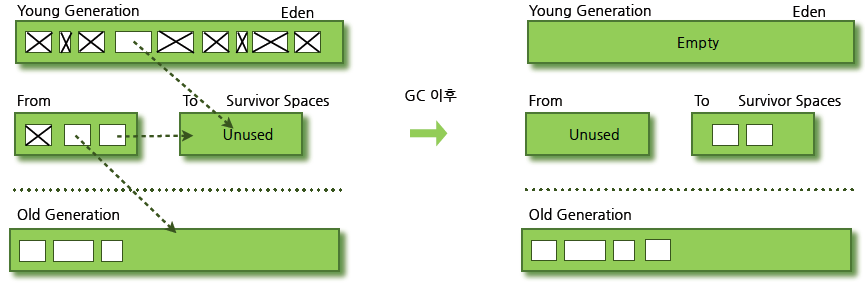
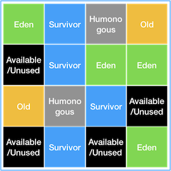

[JVM] JVM 총정리 - 실행 엔진(3)
실행 엔진은 Runtime Data Area 에 적재된 바이트코드들을 실행하고 사용되지 않는 데이터들을 제거하는 역할을 하며 세 가지 장치로 구분된다.
- 인터프리터(Interpreter)
- JIT Compiler
- Garbage Collector
인터프리터(Interpreter)
JVM 인터프리터는 런타임 환경에서 바이트코드를 한 라인씩 읽고 Native Code 로 변환하는 작업을 수행한다. 한 줄씩 기계어로 번역하는 만큼 번역속도는 빠르지만 전체 실행속도는 느리다. 또한 중복되는 바이트코드들에 대해서도 매번 컴파일을 하기 때문에 비효율적이라는 단점이 있다. 이러한 인터프리터 방식의 단점을 보완하기 위해 자바는 1.2 버전부터 뒤이어 설명할 JIT Compiler 를 출시하고 지속적으로 업데이트하면서 속도의 많은 부분이 개선되었다.
JIT Compiler(Just In Time)
앞서 설명한 인터프리터 방식의 속도 문제를 해결하기 위해 디자인 된 기능이다. JIT Compiler 는 이 자주 실행되는 기준을 ‘컴파일 임계치’ 라는 개념의 단위로 판단한다.
컴파일 임계치를 구하는 방법은 다음과 같다.
- method entry counter: JVM 내에 있는 메서드가 호출된 횟수
- back-edge loop counter: 메서드가 루프를 빠져나오기까지 회전한 횟수
JIT Compiler는 컴파일 임계치가 일정 횟수에 도달한 코드를 캐싱하기 충분하다고 판단한다. 캐싱하기 충분하다고 판단된 코드는 컴파일 스레드에 의해 컴파일되기를 기다렸다가 실행되게 된다.
이 컴파일 임계치는 JVM 옵션을 통해 관련된 값을 조절할 수 있다.
Garbage Collector
프로그램이 실행되다 보면 유효하지 않은 메모리인 가비지가 발생하게 되는데 이러한 불필요한 객체들(unreachable objects)을 분별해내고 정리해주는 것이 JVM의 Garbage Collector 이다. GC가 시작되면 JVM은 GC를 실행하는 쓰레드를 제외한 모든 쓰레드들의 작업이 중단된다. 이러한 특징으로 인해 GC 실행 시간을 줄이고자 다양한 알고리즘이 등장하였다.
GC 의 동작 방식
GC 의 대상이 되는 영역인 Heap Area 는 다음과 같은 구조로 이루어져 있다.  (JDK 8 이후로 Perm 영역은 제거되었다)
크게 Yong 영역과 Old 영역으로 이루어져 있으며, Yong 영역은 1개의 Eden 영역, 2개의 Survivor 영역으로 나뉘어져 있다.
GC 는 Yong 영역과 Old 영역에서 일어나는 GC 작업을 구분하여 진행한다.
Yong 영역에서 일어나는 GC 를 Minor GC라 하고, Old 영역에서 일어나는 GC를 Major GC 또는 Full GC라고 한다.
Minor GC
Heap Area의 Yong 영역에서 일어나는 GC를 Minor GC라 부른다. Yong 영역은 새롭게 생성되는 객체가 Allocation(할당)되는 영역이다. 대부분의 객체가 이 영역에서 금방 접근 불가능한 상태(Unreachable)가 되기 때문에, 많은 객체가 Yong 영역에서 GC의
대상이 되어 제거된다. Minor GC가 실행되면 참조되고 있는 객체들을 제외한 나머지 객체들은 제거되게 된다.
Minor GC 가 진행되는 세부 과정은 다음과 같다. 
- 새로 생성된 객체가
Eden 영역에 할당된다. - 객체가 계속 생성되다가 Eden 영역이 가득 차게 되면 Minor GC가 실행된다.
- 참조되지 않는 객체들은 제거되고 살아남은 객체들은 Survivor1 영역으로 복사된다.
- 이후 Survivor1 영역이 가득차게 되거나 Eden 영역이 가득 차게되면 GC 작업 수행 이후 살아남은 객체들이 Survivor2 영역으로 복사된다.
- Eden 영역이나 Survivor2 영역이 가득 차게되면 GC 작업을 수행하고 살아남은 객체들이 Survivor1 영역으로 복사된다.
- 1~5 번 과정이 반복된다.
- 이렇게 반복적으로 Survivor1, Survivor2 를 거쳐 계속해서 살아남은 객체는 GC 횟수가 어떤 임계값을 넘어갈 경우 Old 영역으로 Promotion(이동)하게 된다.
이 과정 중 주의해야 할 점은 두 개의 Survivor 영역 중 한 개는 반드시 사용되어야 한다는 것이다. 만약 두 Survivor 영역에 모두 데이터가 존재하거나, 모두 사용량이 0이라면 그 시스템은 무언가 문제가 있음을 알 수 있다.
또한 각 Object 마다 Object Header 에 Minor GC 에서 살아남은 횟수를 의미하는 age 가 기록되어 있는데, 이 값이 다음 Minor GC 에서 Promotion(이동) 여부를 결정하는 변수가 된다.
Major GC(또는 Full GC)
Major GC는 Old 영역에서 일어나는 GC를 말한다. Old 영역은 Yong 영역에서 Reachable 상태를 유지하며 살아남은 객체들이 복사되는 영역으로, Yong 영역보다 훨씬 크게 할당된다. Old 영역 자체의 크기도 크고 대부분의 객체들이 Yong 영역에서 GC의
대상이 되어 Major GC는 비교적 자주 발생하지는 않지만, 한 번 발생하면 그 시간은 Minor GC보다 훨씬 오래 걸린다. 그래서 GC에 대한 튜닝을 진행할 때는 보통 Major GC의 성능을 높이는 경우가 많다.
GC의 특징
Yong 영역과 Old 영역은 서로 다른 메모리 구조로 되어있기 때문에 세부적인 GC 동작 방식은 다르다. 하지만 기본적으로 GC가 진행된다고 했을 때 두 가지 공통적인 특징을 가진다.
- Stop the world
- Mark and Sweep
Stop the World
Stop the World는 JVM이 GC를 실행하기 위해 애플리케이션 실행을 잠시 멈추는 작업이다. GC가 실행될 때는 GC를 실행하는 thread를 제외한 모든 thread들의 작업이 중단되고, GC가 완료되면 작업이 재개된다.
Mark and Sweep
Stop the World를 통해 모든 작업이 중단되면, GC는 스택의 모든 변수 또는 reachable 객체를 스캔하면서 각각 어떤 객체를 참조하고 있는지 탐색한다. 그리고 사용되고 있는 객체들을 식별하는데, 이 과정을 ‘Mark’ 라고 한다. 이후에 Mark 되지 않는
객체들을 메모리에서 제거하는 과정을 ‘Sweep’ 이라고 한다.
GC의 다양한 알고리즘
GC에는 많은 알고리즘이 있지만 그 중 대표되는 알고리즘 몇 개를 소개하겠다.
Serial Collector
Serial Collector는 싱글 스레드로 모든 종류의 GC를 수행하는 고전적 방식의 Garbage Collector 이다. 이 방식은 싱글 프로세서 시스템에 가장 적합하다.
1 개의 thread 만을 이용해 모든 GC 일을 처리하기 때문에 CPU 코더가 여러 개인 운영서버에서 Serial Collector를 사용하는 것은 반드시 피해야 한다.
- Yong 영역 알고리즘: Serial
- Old 영역 알고리즘: Serial Mark-Seep-Compact
Parallel Collector
멀티 프로세서나 멀티 스레드 하드웨어에서 돌아가는 중대형 규모의 데이터셋을 다루는 애플리케이션을 위한 GC 방식이다. Parallel Collector의 목표는 다른 CPU가 GC의 진행시간 동안 대기 상태로 남아있는 것을 최소화하는 것이다. 이를 위해
Parallel Collector는 Minor GC를 병렬로 수행하게 하여 GC의 오버헤드를 현저하게 줄이고 성능을 향상시키게 한다. Parallel Collector는 GC의 오버헤드를 상당히 줄여주어 Java 8 버전까지 기본 Garbage Collector 로 사용되었다. 그러나
애플리케이션이 멈추는 고질적인 현상은 지속되어 이후에 개발된 알고리즘이 사용되게 된다.
- Yong 영역 알고리즘: Parallel Scavenge
- Old 영역 알고리즘: Serial Mark-Seep-Compact
Concurrent Mark-Sweep (CMS)
CMS Collector 는 애플리케이션이 일시 정지되는 이슈에 매우 민감할 때 사용되는 방식이다. 예컨대 힙 메모리의 크기가 클 때 이 방식을 사용한다.
이 방식은 프로세서 리소스를 GC와 공유하는 방식으로, 자원이 GC를 위해 사용하기 때문에 응답이 느려지지만 애플리케이션이 멈추지는 않게 된다. 그러나 CMS는 다른 GC 방식보다 메모리와 CPU를 많이 필요로해 여러 문제점들이 있었고 결국 Java 9 버전
부터 deprecated 되었다.
Garbage-First Garbage Collector (G1GC)
G1GC는 장기적으로 많은 문제를 일으킬 수 있는 CMS GC를 대체하기 위해 개발되었고, Java 7 버전부터 지원되기 시작했다. 이 방식은 Yong 영역과 Old 영역으로 나누는 방식을 사용하지 않고 전체 Heap을 1MB 단위의 region(리전)들로 균등하게 나누고
각 지역들을 역할과 함께 논리적으로 구분하여 객체를 할당하는 방식이다.
G1GC에서는 기존 Eden, Survivor, Old 역할에 더해 Humongous 와 Available/Unused 라는 두 가지 역할이 추가되었다.
- Humongous: region 크기가 50%를 초과하는 객체를 저장하는 region 을 의미한다.
- Available/Unused: 사용되지 않는 region을 의미한다.
G1GC의 핵심은 Heap 을 동일한 크기의 region 으로 나누고, 새로 추가된 역할을 참고하여 가비지가 많은 region 을 우선적으로 GC 작업을 수행하는 것이다.

Minor GC
Eden 지역에서 GC가 수행되면 살아남은 객체를 Mark(식별) 하고, 메모리를 Sweep(회수) 한다. 그리고 이 객체들을 다른 지역으로 이동시키게 된다. 복제되는 지역이 Available/Unused 지역이면 해당 지역은 Survivor 영역이 되고, Eden 영역이면 Available/Unused 지역이 된다. 한 지역에 객체를 할당하다가 해당 지역이 꽉 차면 다른 지역에 객체를 할당하고, Minor GC를 실행한다. G1 GC는 각 지역을 추적하고 있기 때문에, Garbage First(가비지가 가장 많은 지역) 를 찾아서 Mark and Sweep 을 수행한다.
Major GC (Full GC)
여기에서 G1 GC의 장점이 드러난다. 기존 다른 GC 들은 모든 Heap 영역에서 GC가 수행되어 처리 시간이 상당히 오래 걸렸지만, G1 GC는 어느 영역에 가비지가 많은지 추적하고 있기 때문에 GC를 수행할 지역을 조합하여 해당 지역에 대해서만 GC를 수행한다. 시스템이 계속 운영되다가 객체가 너무 많아 빠르게 메모리를 회수할 수 없을 때 Major GC(Full GC) 가 실행된다.
이러한 방식의 G1 GC는 앞의 어떠한 GC 방식보다 처리 속도가 빠르며, 큰 메모리 공간에서 멀티 프로세스를 기반으로 운영되는 애플리케이션에서도 안정적으로 운용이 가능하기 때문에 Java9부터 기본 GC로 사용되게 되었다.